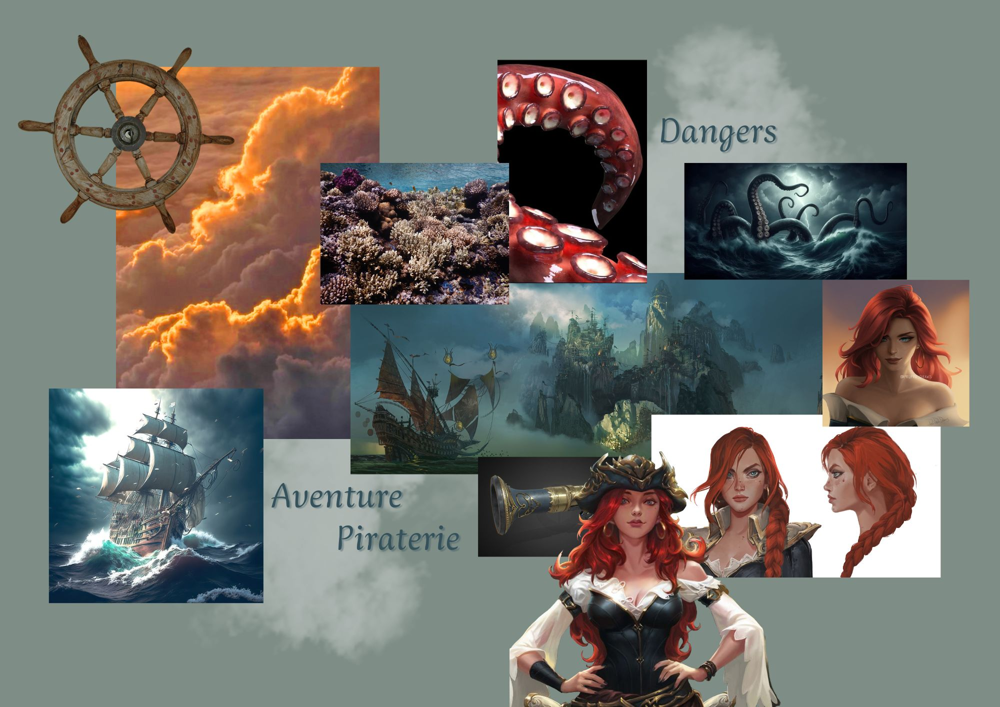

Illustration Photoshop
Plonger dans la piraterie
Pour ce projet, j'ai voulu casser l'aspect trop propre du digital. Guidée par un mood board réalisé en amont pour fixer l'atmosphère, j'ai conçu des brosses Photoshop à partir de scans d'aquarelle. Ces brosses sur-mesure m'ont permis d'illustrer Miss Fortune avec une texture brute et organique, parfaite pour l'ambiance piraterie.
Scroll
 final
final

Moodboard